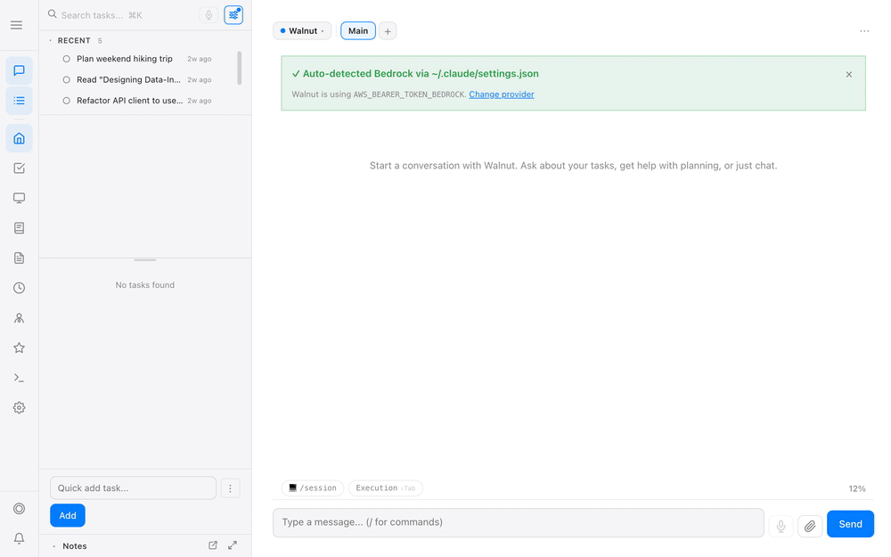
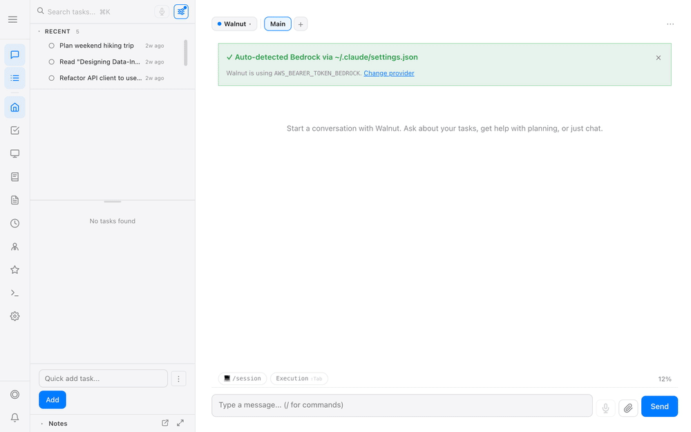
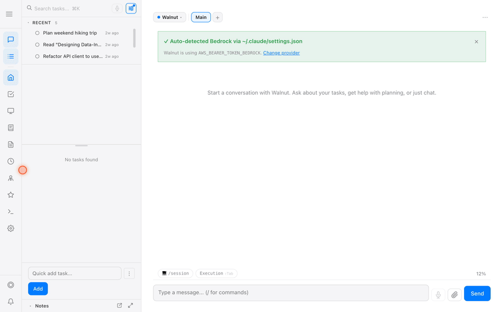
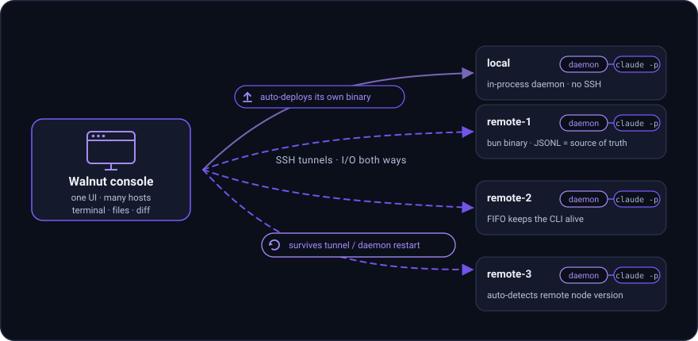
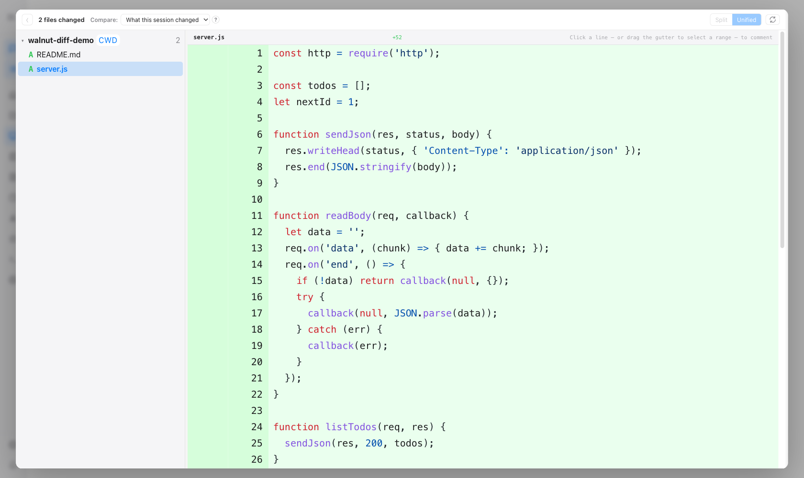
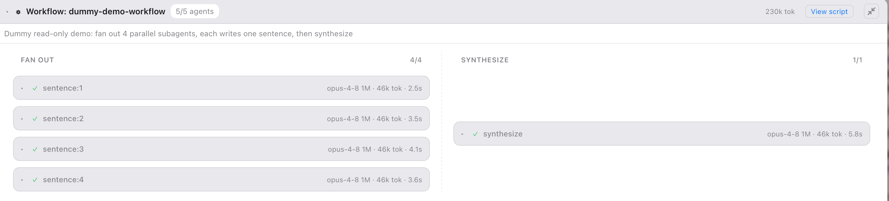

A self-hosted web UI that runs every Claude Code session on your laptop and your remote dev boxes from one console — streaming every tool call live, with a GitHub-style review of exactly what each session changed. Plus tasks, notes, and a memory that organizes itself. Your data stays on your machine.
Stop losing sessions in terminal tabs. Walnut gives Claude Code a real UI and ties it to the work it's for.
Tell the main agent what you want. It creates the task and spawns a Claude Code session for it — in one shot — then streams every tool call and output live in your browser.
Chat with the session and switch modes like the CLI, open a real terminal, browse files, recap past messages, or fork into a sub-session — all in one click.

Drag what you're actively working on into Focus, park secondary work in Satellite, and hold blocked work in Wait. Status is color-coded and updates as the AI works.

Tasks on the left, the main agent chat in the middle, your live Claude Code session on the right. The agent manages it all with full context from your memory and notes.

An Obsidian-style notes vault stored locally and indexed in a local vector database. Ask "what is my health routine?" and the agent finds it across your notes — nothing leaves your disk.
One Walnut console drives Claude Code on your laptop and any number of SSH hosts — and the main agent can drive both. Point at a host and Walnut auto-detects its node version and deploys its own daemon over SSH; no manual scp.
Crash-resilient: if the tunnel or daemon dies, the daemon re-adopts the still-running claude -p processes on reconnect — nothing is lost. Terminal, files, diff, and the command palette all work over SSH.

A GitHub-style, per-session diff — see exactly what each session touched, split or unified, grouped by repo. Rebuilt from the session's own history, so edits stay attributed per session even when several agents share a repo.
Select code → "Ask about this" drops it into the same agent's chat, and click a line for a PR-style comment box that batches into one review.

Claude Code can fan out into a dynamic multi-agent workflow — Walnut is where you actually watch it run. Each phase becomes a column, each subagent a node with its live status, model, token spend, and duration.
Full Claude Code dynamic-workflow support: parallel fan-out and sequential stages are parsed straight from the session stream. Click any node for that subagent's full transcript; it even survives a reload, rebuilt from the on-disk manifest.

Run and monitor dozens of Claude Code sessions side by side, with live status, mid-session model switching, and plan → execute.
A 4-layer Category → Project → Task → Subtask hierarchy with priorities, due dates, dependencies, and tags — each task wired to its Claude Code session.
Two-way sync to Microsoft To-Do and Jira ships built in — and they're just plugins. One generic sync contract means any platform (Asana, Linear, GitHub Issues, an internal tracker) is onboarded by dropping a plugin into ~/.open-walnut/plugins/. Internal plugins never leave your machine.
Working memory updates as you go, and a background agent distills daily logs into searchable topic pages — recency-weighted, hybrid BM25 + vector search.
Obsidian-style markdown with [[wiki-links]], backlinks, a folder tree, and hybrid search — injected into every session as context.
Create on-demand agents, each with independent fresh-context conversations; what you discuss is auto-distilled into that agent's memory.
One-time, interval, and cron-expression jobs with timezones, heartbeat checklists, and automated session triage on a dedicated page.
Browse and run slash commands and skills from one place — including the ones discovered on your remote hosts.
A built-in TTS tool the agent can speak through — no API key, no extra cost.
Plain JSON / Markdown / SQLite in a local folder. No telemetry, no cloud database — your data stays on your machine.
Node ≥ 22 and the Claude Code CLI. That's it.